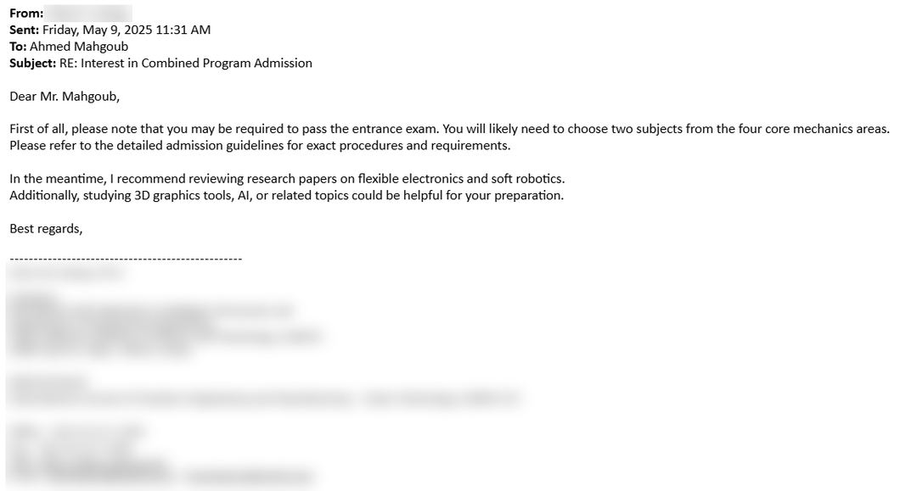
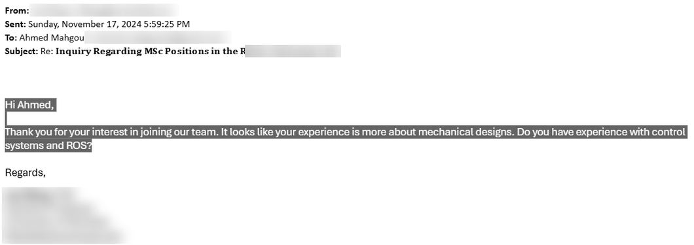
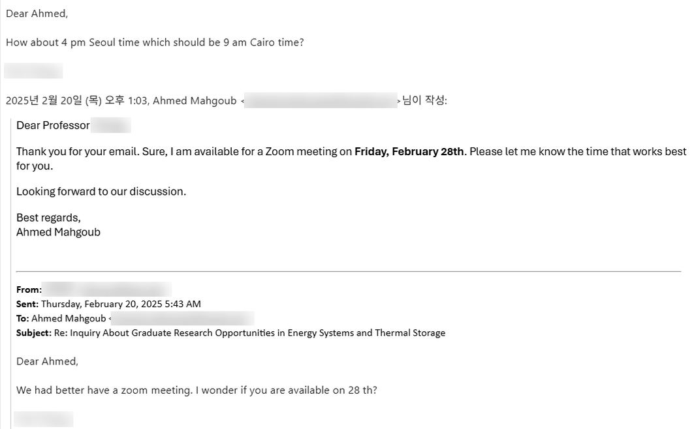
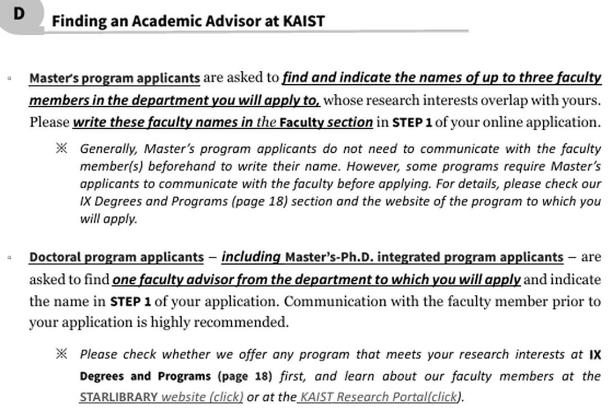
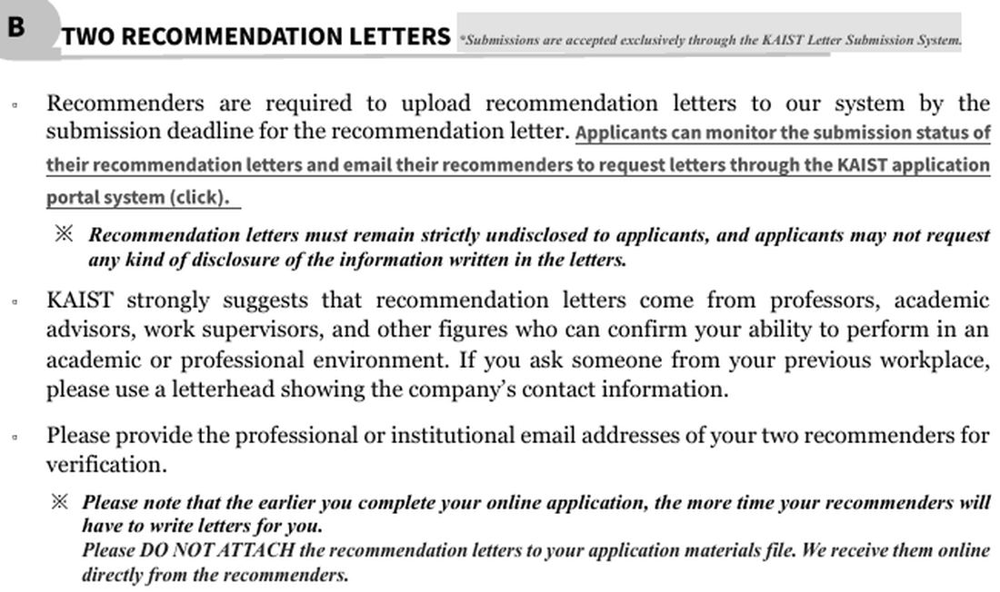
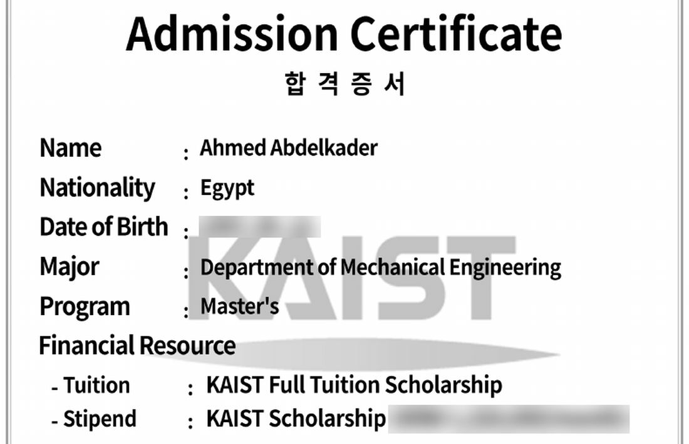
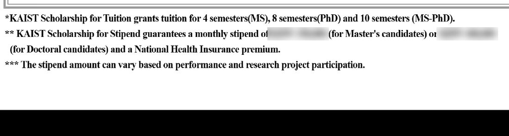

دليل الدراسة برة: إزاي تاخد ماجستير أو دكتوراه ممولة
لما قررت أكمّل دراستي برة، أصعب حاجة ماكانتش القبول. كانت: أبدأ منين؟ المعلومة كانت متفرقة: شوية في جروب على فيسبوك، وشوية في بوست من سنين، وشوية عند صاحبك اللي سافر، وشوية في كومنت مدفون تحت فيديو يوتيوب.
فقلت اللي اتعلمته بالطريقة الصعبة أحطه في مكان واحد، بالترتيب اللي هتحتاجه فعلًا: من أول ما تفتح اللابتوب لحد جواب القبول. هحكيلك اللي نفع معايا، واللي ما نفعش.
أحمد محجوب. هندسة قوى ميكانيكية، عين شمس، ودلوقتي ماجستير في KAIST، كوريا.
آخر مراجعة: أكتوبر 2026. الرسوم وشروط الامتحانات والمواعيد بتتغير كل سنة، فاتأكد دايمًا من الموقع الرسمي.
الخطوة 0
ليه أصلًا حد يدفعلك عشان تدرس؟
قبل ما ندوّر على بروفيسور، لازم نفهم الحتة دي. ولا، مش عشان عيونك الحلوة.
باختصار: دوّر على دراسة بحثية، مش مهنية. في البحثي إنت بتشتغل في معمل على مشاريع ممولة، فبتاخد مرتب. إنت مش بتطلب خدمة، إنت بتعرض حاجة البروفيسور محتاجها.
إحنا بندوّر على إيه بالظبط؟
ماجستير بحثي
M.S.، سنتين تقريبًا
فيه مواد، بس الأساس شغلك في المعمل.
دكتوراه
Ph.D.، من 4 لـ 5 سنين
إنت فيها باحث بشكل كامل.
مدمج
Integrated
بتدخل من البكالوريوس على الدكتوراه على طول.
والفرق اللي يهمك: فيه ماجستير مهني، بتدفع فيه مصاريف وتاخد مواد، وغالبًا من غير معمل. أما البحثي، فعشان إنت بتشتغل فيه، غالبًا بيتموّل. وده اللي الدليل ده بيتكلم عنه.
مين بيدفع؟ أربع طرق
البروفيسور نفسه
Research Assistant
عنده مشاريع ممولة، وبيصرف عليك منها. ودي أشهر طريقة.
منحة حكومية
زي GKS في كوريا
مضمونة، بس المنافسة عليها عالية والمواعيد ثابتة.
منحة الجامعة
University
غالبًا بتيجي مع تمويل البروفيسور.
على حسابك
Self-funded
ممكن، بس في البحثي نادر تحتاجها لو دوّرت صح.
طب لو دخلت، هتبقى إيه بالظبط؟
المعمل زي شركة صغيرة. البروفيسور هو المدير، وهو اللي بيجيب المشاريع والفلوس. وتحته Postdocs، وطلبة دكتوراه، وطلبة ماجستير زيك. ومعاك مكتب، وجهاز، وزمايل من بلاد مختلفة، ومرتب شهري. والقهوة غالبًا ببلاش، ودي ميزة ما تتقالش في الإعلانات.
وبتشتغل على جزء من مشروع حقيقي، لجهة دافعة فلوس. كل يوم بتشتغل: simulation، أو تصميم، أو تجارب. وكل أسبوع فيه lab meeting بتعرض فيه وصلت لفين. وفي الآخر، شغلك بيتحول لورقة بحثية.
يعني إنت مش طالب بيتصرف عليه. إنت باحث بيشتغل، وبياخد مقابل.
طب والجامعة نفسها بتهتم ليه؟
بص على تقييم QS للجامعات. نسبة الطلبة الأجانب فيه خمسة في المية بس. لكن الأبحاث اللي بتطلع، والـ citations بتاعتها، دي لوحدها عشرين في المية. يعني الجامعة مش بتجيبك عشان تكمّل نسبة. بتجيبك عشان إنت اللي بتشغّل البحث.
البروفيسور بيخلّص مشروعه، والجامعة بتنشر وترفع تقييمها، والدولة بتاخد ناس شاطرة. وإنت بتاخد شهادة، وخبرة، ومرتب. يعني ده تبادل، مش صدقة. فلما تبعت إيميل لبروفيسور، إنت مش بتطلب خدمة، إنت بتعرض عليه حاجة هو محتاجها.
إنت مش بتقدّم لبلد، ولا حتى لجامعة في الأول. إنت بتدوّر على شخص: بروفيسور شغله قريب من شغلك.
باختصار:
استخدم ترتيب QS للتخصص بتاعك، ووسّع لحد أول مية جامعة، مش أول عشرة بس.
احسب فرق التوقيت، واللغة، ومدى انفتاح البلد على الأجانب.
امشي من صفحة أساتذة القسم، لصفحة البروفيسور، لموقع المعمل.
سجّل كل حاجة في شيت واحد.
ابدأ بترتيب التخصص
أول حاجة عملتها: نزّلت شيت الـ QS Ranking، وده ترتيب سنوي لجامعات العالم. الشيت فيه أعمدة كتير، بس اللي يهمك في الأول تلاتة: الترتيب، والجامعة، والبلد. وخلّي بالك: فيه ترتيب عام، وفيه ترتيب لكل تخصص لوحده. ولو إنت مهندس ميكانيكا، ترتيب الميكانيكا هو اللي يفرق معاك، وهتلاقيه مختلف عن العام.
مش الترتيب بس
احسب
ليه
فرق التوقيت
كوريا واليابان قدام مصر بست أو سبع ساعات، وكندا ورا مصر بسبع ساعات. وده بيفرق في التواصل مع البروفيسور، ومع أهلك. ومامتك هتكلمك الساعة 3 الفجر بتوقيتك، ودي حاجة لازم تتقبلها من دلوقتي.
اللغة
الدراسة والحياة بالإنجليزي، ولا لازم تتعلم لغة البلد؟
الانفتاح
البلد بتتقبّل الأجانب قد إيه، وطبيعة الحياة هناك عاملة إزاي.
من صفحة الأساتذة للمعمل
خلّينا ناخد مثال: عايزين نقدّم في جامعة تورونتو في كندا.
افتح جوجل واكتب اسم الجامعة، والتخصص، وكلمة faculty. هتلاقي صفحة أساتذة القسم، ودي الصفحة اللي هتقضي فيها أغلب وقتك. حرفيًا، هتحفظ وشوشهم أكتر من وشوش قرايبك.
غالبًا هتلاقي فلتر بالتخصص، فاختار المجال اللي قريب منك.
كل بروفيسور شكله مناسب، ادخل صفحته وشوف بيشتغل في إيه. لو المجال قريب، كمّل.
ادخل على موقع المعمل، وشوف أربع حاجات: بيبحثوا في إيه، وفيه حاجة زي Opportunities أو Positions (يعني بياخدوا طلبة)، وفي صفحة الأعضاء فيه طلبة من برا البلد ولا لأ، والمشاريع اللي شغالة دلوقتي: إنت شايف نفسك فيها؟
mie.utoronto.ca/faculty-staff/core-faculty
صفحة أساتذة القسم، والفلتر بالتخصص.
Professor's page and lab website
من صفحة البروفيسور لموقع المعمل. دوّر على Opportunities أو Positions.
اعمل شيت واحد لكل الأساتذة
وإنت بتدوّر، سجّل كل بروفيسور لقيته: الجامعة، والمجال، وهل فيه ماتشنج، وهل المعمل بياخد أجانب، وإمتى بعتّله، وإمتى تتابع، ورد ولا لأ. عشان بعد بروفيسور رقم 200، صدقني مش هتفتكر مين ده ومين ده.
الجامعة
البروفيسور
المجال
ماتشنج
أجانب
بعتّله
متابعة
الرد
University of Toronto
Prof. A
Multiscale design
عالي
✓
3 مارس
17 مارس
–
KAIST
Prof. B
Thermal storage
عالي
✓
5 مارس
–
رد ✓
TU Delft
Prof. C
Cryogenics
متوسط
✓
8 مارس
22 مارس
–
مثال توضيحي، مش بيانات حقيقية.
غلطاتي، عشان ما تكررهاش
ما تقفلش على التوب 10
حتى لو إنت من أجمد تلاتة في شارعكم، فيه واحد في الهند وواحد في الصين برضو من أجمد تلاتة في شارعهم، وشارعهم أطول بكتير. وسّع لحد أول مية.
تابع وما تيأسش
لو شغله قريب منك جدًا وما ردّش، ابعتله تاني بعد أسبوع أو أسبوعين. الإيميل الأولاني ممكن يكون ضاع.
ابعت في وقت شغله
4 العصر في مصر يوصله 9 الصبح في تورونتو، أول ما يفتح الإيميل. مش 3 الفجر وهو نايم.
بصراحة
سمعة التعليم عندنا في مصر مش أحسن حاجة برا، ودي حقيقة لازم نتعامل معاها. البروفيسور مش هيعرف إنك شاطر من اسم جامعتك، هيعرف من شغلك ومشاريعك. والحلو إن دي حاجة في إيدك.
البروفيسور بيجيله إيميلات كتير. إيميلك لازم يبقى سهل يتفتح، وسهل يتقري، وباين إنه مكتوب له هو.
باختصار: لينك واحد بدل كومة مرفقات، وتلات أجزاء في الإيميل (بحثه، وإنت، وجملة تربطكم)، وابعت كتير. توقّع تقريبًا رد واحد من كل 10 لـ 20 إيميل.
إزاي كنت ببعت شغلي، وإيه اللي اتغيّر
1. كل حاجة PDF
المرفقات كانت بتوصل لـ 15 ملف في الإيميل الواحد. تخيّل البروفيسور فاتح الإيميل، لقى 15 ملف، فقفله وقام يعمل شاي.
2. لينك درايف
فولدر فيه كل حاجة. برضو مش هيفتحه، ولو فتحه هيتوه في الفولدرات.
3. موقع شخصي
لينك واحد فيه دراستك وشغلك ومشاريعك. ومش لازم يبقى معقد، صفحة بسيطة كفاية.
ahmedmahg.github.io/AhmedMahgoub
الموقع البسيط اللي كنت ببعت لينكه في الإيميلات وقتها.
الإيميل نفسه
بحثه. قبل ما تبعت، اقرا ورقة أو اتنين من شغله الأخير، واذكر حاجة محددة منهم.
إنت. دراستك، وأقرب مشروع ليه، ولينك شغلك.
جملة واحدة تربطكم. ليه خلفيتك مناسبة لشغله. دي اللي بتفرق إيميلك عن الباقي.
تنشّن ولا ترش؟
التنشين
الرش
لمين
عدد قليل ومختار
كل أساتذة التخصص
كل إيميل
متفصّل لكل واحد
وقت أقل لكل إيميل
الفرص
أقل
أكتر
أنا اخترت الرش: بعت أكتر من 800 إيميل، يمكن قربت من الألف، عشان أبقى في السيف سايد. ومن كل عشرة لعشرين إيميل، تقريبًا واحد بس بيرد. وناس كتير ذوق بيردوا يقولولك: معنديش مكان، بس بروفايلك كويس. وبعد كام مرة، هتحس إن الجملة دي بقت بتحفظها أكتر من اسمك.
بس الرش ما ينفعش يبقى copy-paste. البروفيسور شاف "I hope this email finds you well" أكتر ما إحنا شفنا إعلان شيبسي.
عن الـ AI: استخدمه تظبّط بيه لغتك، أو تلخّص بيه أبحاث البروفيسور. بس الكلام لازم يبقى كلامك. لو الإيميلات كلها مكتوبة بالـ AI، هو عارف شكلها كويس، ومش هيبص في شغلك.
الـ Sent Items عندي، متعملها blur.
وعارف البروفيسور بتاعي قالي إيه؟
"أنا قريت إيميلك بالصدفة." فابعت كتير، وما تستقلش بأي إيميل.
بعد أسابيع من الصمت، في الوقت اللي بطّلت فيه تفتح الإيميل غير عشان تمسح الـ newsletters، فجأة يجيلك رد. تعمل إيه؟
الرد بيبقى واحد من تلاتة
معنديش مكان
No position
حتى ده رد عليه. اشكره واسأله لو يعرف حد عنده مكان.
ابعتلي CV
Send your CV
لسه بيفكر. ابعتها في نفس اليوم، ما تسيبوش يستنى.
تعالى نتكلم
Let's meet
ده اللي عايزينه. بس خد بالك: ده مش قبول، دي أول خطوة.
ساعات فيه فرز قبل المكالمة
دي ردود حقيقية جاتلي:

واجب. قالي غالبًا هتعدّي امتحان دخول في مادتين من أربع مواد ميكانيكا أساسية، ونصحني أقرا أبحاث في مجاله. وأنا كنت فاكر إني خلصت الواجبات من أيام الكلية.

سؤال فرز. "شغلك باين إنه mechanical design، عندك خبرة في control systems وROS؟" جاوب بصراحة، ولو عندك حاجة قريبة قولها بمثال، ولو مفيش قول هتتعلمها إزاي.

تعالى نتكلم. ده رد البروفيسور بتاعي: Zoom يوم 28، الساعة 4 بتوقيت سول، يعني 9 الصبح في القاهرة. شوف الرد قصير إزاي. مفيش وعود، مجرد ميعاد. والباقي عليك.
قبل الميعاد
ارجع اقرا آخر بحثين أو تلاتة ليه، عشان غالبًا هتحتاج تربط شغلك بيهم.
حضّر تلخيص لشغلك في دقيقتين: إنت مين، وعملت إيه، وعايز تعمل إيه.
غالبًا Zoom أو Teams، من ربع ساعة لساعة. وأغلب الأسئلة بتلف حوالين حاجات قليلة:
Tell me about yourself. احكيلي عن نفسك.
Why this lab? ليه المعمل ده بالذات؟
What did you do in your last project? عملت إيه في آخر مشروع؟
Why do you want this degree? عايز الدراسة دي ليه؟
جاوب دايمًا بمثال حقيقي من شغلك: مشروع عملته، مشكلة حليتها، رقم طلّعته. ولو اتسألت حاجة مش عارفها، قول مش عارف، وقول هتدوّر عليها إزاي. ده أحسن من إنك تألف. البروفيسور مش بيدوّر على حد عارف كل حاجة، بيدوّر على حد يتعلم ويشتغل معاه.
إنت كمان تسأل
في الآخر هيسألك Do you have any questions? وأوعى تقول لأ.
التمويل
مضمون لكام سنة، وبيغطي إيه؟
المشروع
هشتغل على إيه؟
المعمل
مين فيه دلوقتي؟
الخطوة الجاية
هيحصل إيه بعد كده؟
ولو تقدر، كلّم طالب من المعمل. هيقولك الصورة من جوه.
بعد المكالمة
إيميل شكر في نفس اليوم. سطرين بس: شكرًا على وقتك، وأنا متحمس للمشروع اللي اتكلمنا عنه.
Follow-up بأدب لو عدّى أسبوعين من غير رد. ده عادي ومش عيب.
قدّم. لو قالك قدّم، ساعتها تبدأ المرحلة اللي بعدها.
افتكر: الـ interview مش امتحان. دي مكالمة بين اتنين، كل واحد فيهم محتاج التاني.
الـ application ده الملف اللي بتقدّمه للجامعة نفسها، على موقعها، في ميعاد محدد. ولجنة القبول هي اللي بتقرر، حتى لو البروفيسور موافق عليك. فالاتنين لازم يمشوا مع بعض: بروفيسور عايزك، وملف كامل من غير غلطة.
اقرا الموقع الأول، وبعدين اسأل
إحنا متعودين نسأل حد عدّى بالتجربة، ونستنى حد يقولنا. بس المعلومة دي ممكن تبقى قديمة، وكل تجربة غير التانية. برا، الموقع بيتحدّث كل سنة، وعليه كل الشروط والمواعيد والورق. فاقرا الموقع الأول، وبعدين اسأل في اللي مش لاقيه.
أقسام الشروط شبه بعض في كل جامعة
الجنسية
Citizenship
مين يحق له يقدّم. في KAIST، برنامج الطلبة الدوليين للي مش كوريين.
المؤهل
Academic Qualification
للماجستير بكالوريوس، وللدكتوراه ماجستير.
اللغة
English Proficiency
أقل درجة في كل امتحان. ومصر مش في قايمة الإعفاء، فلازم تمتحن. دوّرت عليها في القايمة مرتين، للأمانة.
اعمل لكل جامعة checklist فيها الأقسام دي، واملاها من الموقع. كده مش هتتوه. وخد بالك من التفاصيل الصغيرة، زي إن درجة الإنجليزي لازم تبقى سارية لحد آخر ميعاد للتقديم.
كل اللي جاي مثال من دليل التقديم بتاع KAIST. مش كل الجامعات كده، بس الأقسام غالبًا شبه بعض.
اسم البروفيسور في الفورم نفسه
جامعات كتير بتطلب منك تكتب اسم البروفيسور اللي عايز تشتغل معاه. KAIST بتطلب من طالب الماجستير لحد تلات أسماء من القسم، ومن طالب الدكتوراه اسم واحد، وبتنصحه يكون اتواصل معاه قبل ما يقدّم. وهنا تبان قيمة الخطوات اللي فاتت: لو البروفيسور عارفك، اسمه في الفورم بيفرق.

كله أونلاين، على خطوات
بياناتك، وبعدين دراستك وورقك، وبعدين الـ Statement of Purpose، وبعدين الـ CV. وفي الآخر رسوم التقديم (في KAIST كانت 80 دولار وقت ما قدّمت). بعد ما تدفع، مش هتقدر تعدّل حاجة. فراجع كل حاجة الأول، مرة واتنين، وخلّي حد تاني يراجع وراك.
جدول الورق المطلوب
اقراه سطر سطر، فيه حاجات ممكن ما تتوقعهاش. زي إثبات جنسية والدك ووالدتك. أيوه، والدك ووالدتك، حتى لو هما مش مسافرين معاك. وبعدين الشهادة والـ transcript، وشهادة الإنجليزي، والـ CV.
الـ Statement of Purpose والأسئلة القصيرة
إنت مين، وعملت إيه، وعايز تعمل إيه هنا. وفي KAIST كان حده الأقصى 5,000 حرف تقريبًا، وجنبه أسئلة قصيرة، وكل واحدة ليها حد أقصى.
الـ CV
بعض الجامعات عايزاه بفورمات معين، وبعضها زي KAIST مش محدد. اتأكد الأول.
جوابات التوصية

ودي من أحرج حاجة في الملف. غالبًا الجامعة هي اللي بتبعت إيميل للدكتور، وهو اللي بيرفع الجواب بنفسه. وإنت مش هتشوف الجواب، ومش من حقك تطلب تشوفه. فاختار دكتور عارفك كويس، وفارق معاه مصلحتك. لأنه لو كبّر دماغه، الملف كله هيقف. اختار دكتور بيرد على الإيميل، مش دكتور بيفتكر إيميلك بعد الـ deadline بأسبوعين. وكلّمه بدري، وفكّره قبل الـ deadline بأسبوع.
الشهادة والـ transcript
لازم يبقى فيهم نظام التقديرات والـ CGPA. ولو الـ transcript مش موضّح نظام التقديرات، ضيف ورقة بتشرحه. والتوثيق: في جامعات بتطلبه قبل ما ترفع الورق، وفي جامعات زي KAIST بتنصح بيه.
التوثيق في مصر
مصر مش في اتفاقية الـ Apostille، فالتوثيق عندنا بيمشي على مراحل:
الجامعة (نسخة معتمدة)المجلس الأعلى للجامعاتوزارة الخارجيةسفارة البلد اللي رايحها
وكل مرحلة ليها طابور، فخد معاك صبر، وزجاجة مية. ولو البروفيسور موافق عليك، وثّق بدري وريّح دماغك، وده كمان بيبيّن إنك جاد. ووثّق نسخ معتمدة، لأن جامعات كتير مش بترجّع الورق.
شروط الإنجليزي في دليل KAIST: أربع امتحانات مقبولة، ولكل واحد أقل درجة. والـ IELTS لازم يكون Academic، والنتيجة لازم تكون طالعة قبل الـ deadline، والنسخ المؤسسية (ITP) مش مقبولة.
أنهي امتحان؟
TOEIC
الأسهل
Listening وReading بس، واختيار من متعدد. مقبول أساسًا في كوريا واليابان.
IELTS
الأشمل
أربع مهارات، فيهم Speaking وWriting. مقبول في كل حتة تقريبًا.
TOEFL
مقبول في كل حتة
أربع مهارات، في مركز أو من البيت. ونظام درجاته اتغيّر من يناير 2026.
هدفك كوريا بس؟ TOEIC. أكتر من بلد؟ IELTS أو TOEFL.
تمتحن فين في مصر
TOEIC: من Amideast مصر. اختار TOEIC Listening and Reading، وشوف المواعيد، واحجز وادفع أونلاين. ولو مش عارف تحجز أونلاين، روح أي فرع وادفع هناك. المكتب الرئيسي في الدقي، 38 شارع محيي الدين أبو العز، وفيه فرع في إسكندرية، والخط الساخن 19263. الامتحان ساعتين، 200 سؤال، وعلى موقعهم نموذج امتحان ببلاش.
IELTS: احجز من British Council أو IDP، وعندهم مراكز في القاهرة والجيزة وإسكندرية. واختار Academic، مش General Training. والسعر حوالي من 8 لـ 10 آلاف جنيه، حسب المركز ونوع الامتحان. اتأكد من السعر قبل ما تحجز.
TOEFL: بتسجّل له من موقع ETS على طول، في مركز أو من البيت. سعره في مصر كان حوالي 175 دولار.
اللي حصل معايا
امتحنت TOEIC. سألت AI، وقالي إن فيه نسختين: ورقي وكمبيوتر. فقعدت أتمرن على الورقي، بالقلم الرصاص والأستيكة، كأني داخل امتحان تانية ثانوي. ولما رحت، لقيت إن الموجود بس كمبيوتر، والامتحانين مختلفين. فاضطريت أعيد الامتحان كله، ودفعت تمنه مرتين، والـ AI ما دفعش ولا جنيه.
فاتأكد دايمًا من الموقع الرسمي، مش من الـ AI. واتمرن على نفس شكل الامتحان: فيه مواقع زي EstudyMe فيها امتحانات TOEIC أونلاين ببلاش، أجزاء أو امتحان كامل. اتمرن على الكمبيوتر، عشان يوم الامتحان ما تتفاجئش.
وابدأ بدري، عشان لو احتجت تعيد، يبقى عندك وقت. وأنا عارف كويس الحتة دي.
يوم النتيجة على البورتال. اتقبلت في ماجستير الهندسة الميكانيكية، دفعة ربيع 2026.

شهادة القبول، والتمويل مكتوب فيها.
وفي نفس الجواب، KAIST بتقول إن حوالي 94% من الطلبة الدوليين في آخر 5 سنين خدوا إعفاء من المصاريف، و91% خدوا المرتب الأساسي. يعني التمويل اللي اتكلمنا عنه في الخطوة صفر، ده الطبيعي هنا، مش الاستثناء.
التمويل مكتوب في الجواب
شهادة القبول فيها التخصص، والبرنامج، ومصدر التمويل: إعفاء كامل من المصاريف، ومرتب شهري. والحاشية تحت بتقول إن الجامعة بتضمن جزء من المرتب، ومعاه التأمين الصحي، والباقي بيتغير حسب مشاركتك في مشاريع البحث. يعني البروفيسور بيكمّل من مشاريعه، زي ما قلنا بالظبط.

لازم ترد
تقبل
Accept
تبعت الورق المطلوب حسب دليل التسجيل. وده اللي بيأكد إنك جاي.
ترفض
Decline
رسميًا من البورتال، قبل ميعاد محدد.
شحن الورق
الورق ده هو الأصول الموثّقة، وبيتبعت بالبريد السريع. حطه في حسابك من الأول.
من مصر
أنا بعته DHL، Express Worldwide، يوم 22 ديسمبر، ووصل في أربع أيام. والتكلفة كانت حوالي 3,850 جنيه. الورق وصل في أربع أيام، والفلوس خرجت من جيبي في ثانية. واحتفظ برقم الشحنة، وتابعها لحد ما توصل.
الرحلة كلها
أكتوبر 2024
أول إيميلات للأساتذة
فبراير 2025
الـ Zoom مع البروفيسور
ديسمبر 2025
القبول
مارس 2026
بداية الدراسة
يعني أكتر من سنة. فابدأ بدري، وما تستعجلش النتيجة.
وفي الآخر
لو الدليل ده فادك بحاجة، ادعيلي، وشاركه مع حد محتاجه. ولو عندك سؤال ما لقيتش إجابته هنا، ابعتلي إيميل.